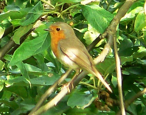

Kesäkuu 2007 |
VierumäkiVuoden vaihteessa varasimme Insinööriliiton mökin Vierumäeltä viikoksi. Tarkoituksena tietystikin pelata golfia. Mökkipakettiin sisältyi edullisesti kaksi pelioikeutta vanhalle Classic-kentälle ja kaksi uudelle Cooke-kentälle. Mummi ja vaari olivat viettäneet siellä jo edellisen viikon golf-tuttaviensa kanssa ja jatkoivat sitten toisen viikon meidän kanssamme. Säiden suhteen viikon lomamme oli täysosuma. Lämpötila, jota vieno tuulenvire mukavasti viilensi, pyöri koko viikon hellelukemissa. Pelasimme vuoroin uutta ja vanhaa kenttää. Vanha kenttä oli aika ruuhkainen, mutta uudella Cookella oli runsaasti tilaa, niin että välillä tuntui kuin kentällä ei muita pelaajia olisi ollutkaan. Cooke-kentällä kuulimme käen kukuntaa ja myös näimme kukkujan. Se lenteli puusta puuhun ja kukkui kaikki ohi kulkevat golfarit. En ole moista aikaisemmin nähnyt. Uusi keittiöKeittiöremontti oli meneillään samaan aikaan, kun vietimme lomaa Vierumäellä. Mietimme, kuinka pahasti työ on vaiheessa, kun palaamme kotiin. Vaikka lupailihan asentaja, että eiköhän tuo viikossa saada tehtyä. Soittelimme päivää ennen kotiinpaluuta ja saimme iloksemme kuulla, että keittiö on käyttökunnossa. Kotiin palattuamme kaikki todellakin oli vain viimeistä silausta vaille valmista. Panimme kädet kyynerpäitä myöden ristiin, sillä olimme kuulleet kauhutarinoita "ei-niin-hyvin" menneistä remonteista. No uunin kanssa oli pientä häikkää, mutta huoltomiehen käynnin jälkeen sekin saatiin kuntoon. Näkyvin muutos oli, tummien pöytätasojen lisäksi, valaistuksen huomattava parantuminen. Ehkä juuri valon ansiosta koko keittiö näytti jotenkin tilavammalta kuin aikaisemmin. Toinen tärkeä muutos oli alakaappien korvaaminen vetolaatikoilla. Niistä saa tavarat kätevästi myös aivan perältä. Ja ne sulkeutuvat jarruttaen hiljaa kuin ajatus. Itselleni mieluisin asia kuitenkin oli uusi induktioliesi. Luettuani erinäisiä artikkeleita ja mielipiteitä induktioliesistä olin vakuuttunut, että mekin tarvitsemme sellaisen. Ja sellainen meille tuli. Induktioliedessä liesitaso itsessään ei lämpene, vaan sähkömagneettinen induktio aiheuttaa keittoastian pohjaan pyörrevirran, joka lämmittää suoraan astian. Hienointa hommassa on se, että lämmitys reagoi välittömästi, kun tehoa muuttaa. Lähes niinkuin kaasuliedessä. Ja energian kulutuskin on vähäisempää kuin muissa liesimalleissa. Lieden hankinta tosin merkitsi sitä, että kaikki kattilat jouduttiin uusimaan, koska keittoastian pohjan pitää olla magnetoituvaa ainetta eli kupari- ja alumiinipohjaiset astiat eivät induktiotasolla lämpene lainkaan. Golf-kilpailutElisan golf-mestaruukilpailut järjestettiin Sarfvikin uudella kentällä. Emme ole juurikaan käyneet missään kilpailuissa, mutta Mirja oli ylipuhuttu mukaan naisten vähäisestä määrästä johtuen, joten ilmoittauduin sitten minäkin. Kenttä oli aika erikoista ylä- ja alamäkeä. En oikein tykännyt siitä, ainakaan kun ei aikaisemmin ollut kiertänyt sitä. Mirja saavutti naisissa kolmannen sijan, mutta omani oli selvästi heikompi. 26 bogey-pistettä oli meillä molemmilla. Mutta oli ihan mukava osallistua taas pitkästä aikaa ja tapasihan siellä koko joukon vanhoja tuttuja. |
Kuukauden sääKesäkuun ensimmäinen viikko oli helteinen ja aurinkoinen. Loppukuusta hikan viileni ja sää muuttui epävakaisemmakasi. Kuukauden ajatusMaata ei ole luotu ihmistä varten, vaan ihminen on luotu maata varten. - Istuva Härkä - Kuukauden kuvaPunarinta |